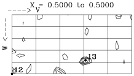
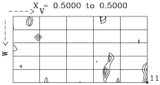
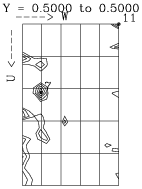
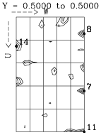
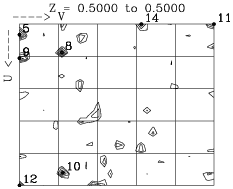
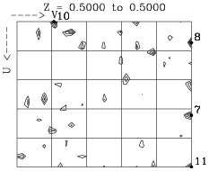
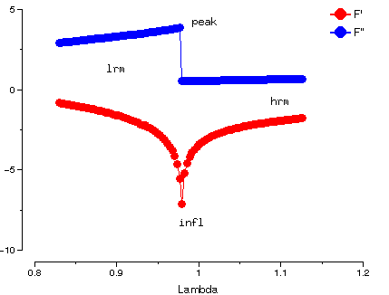

See also the tutorial worksheet for MIR or the tutorial worksheet for MAD.
Difference and Anomalous Pattersons as run in the Experimental Phasing (by MIR) tutorial, step 3b) Finding the first heavy atom sites by Patterson Search.
Left-hand side of the table below represent difference Patterson, right-hand side represent anomalous Patterson. Harkers of x=1/2, y=1/2 and z=1/2 underneath each other.
In all cases, reflections outside resolution range 10-3.5Å were excluded.
Table 1. Difference and Anomalous Pattersons. Peak numbers labelled on map.
|  iso 10-3.5 |
 ano 10-3.5 |
|  iso 10-3.5 |
 ano 10-3.5 |
|  iso 10-3.5 |
 ano 10-3.5 |
The difference Patterson is clear, at least on sections u=1/2 and v=1/2. From those, we can work out which peak on section w=1/2 is the 'correct' one.
For Harker section u=1/2: v=1/2-2y and w=2z. Peak 13 is at v~0.3,w~0.4,
so z~0.2 (check the .ha file for more precise values)
For Harker section v=1/2: u=2x and w=1/2-2z. Peak 7 is at u~0.2,w~0.1,
so x~0.1
For Harker section w=1/2: u=1/2-2x and v=2y. u is therefore ~0.3,
which leaves v~0.2 as the only usable peak (linking back to section u=1/2!), so y~0.1.
Keep in mind that, due to the Patterson symmetry for this spacegroup, the actual values for x,y and
z may turn out to be negative or positive, and 1/2 can be added or subtracted to any or all of them.
Unfortunately (and this is not at all uncommon), the anomalous Patterson is not a big help in this. Sometimes excluding outlier reflections becomes crucial in the interpretability of the anomalous Patterson, or it can be made more interpretable by using F(+) and F(-) (CCP4i Protocol option 'Anomalous Difference Patterson'), rather than DANO.
f' and f'' for Se varies with wavelength as (output from program crossec):

We have data for 4 wavelengths, labelled as:
But:
See Lynne Howell and Dave Smith, J.Appl. Cryst. 25 81-86 (1992)
Most direct methods procedures make use of normalised structure factors (denoted E) rather than the bare structure factor amplitude F. The value of E for a reflection is defined as F divided by the product of epsilon (a factor dependent on the Laue group symmetry) and the r.m.s. value of the structure amplitudes at its sin(theta)/lambda value. The values of E therefore do not fall off with increasing scattering angle.
See C.Giacovazzo et al., Fundamentals of Crystallography, p.321
In CCP4, the program ECALC is used to derive Es from Fs. These can then be used in the direct methods program RANTAN.
When trying to understand heavy atom positions, remember to consider symmetry equivalent positions. Also, depending on the spacegroup, there may be alternative origins. Finally, there are 2 possible hands for each set of positions.
The current example is in spacegroup C2. This is a polar spacegroup, so that the origin is not fixed along the b axis. In addition, there are 4 possible origins in the a-c plane:
Norigin Xo Yo Zo
1 0.0000 0.0000 0.0000
2 0.0000 0.0000 0.5000
3 0.5000 0.0000 0.0000
4 0.5000 0.0000 0.5000
Heavy atom sites from different phase sets output from RANTAN may be with respect to different origins. For example, the first 3 sites from phase set 1 are:
0.26 0.06 0.75
0.43 0.24 0.38
0.20 0.45 0.36
The opposite hand would also be a solution:
-0.26 -0.06 -0.75
-0.43 -0.24 -0.38
-0.20 -0.45 -0.36
We can then change the origin to -0.5,-0.24,-0.5 (origin 4 above, plus a shift along the b axis):
0.24 0.18 0.75
0.07 0.00 0.12
0.30 0.79 0.14
Finally, we find a symmetry mate of site 3 by applying the symmetry operation 1/2-X,1/2+Y,-Z:
0.24 0.18 0.75
0.07 0.00 0.12
0.20 0.29 0.86
These are in fact the first 3 sites of phase set 2!!
In MAD, the "derivatives" correspond to different wavelengths of the same derivative (e.g. a 3 wavelength Se-Met MAD experiment would give 3 "derivatives"). When refining heavy atom positions for each "derivative", you are actually refining the same heavy atom coordinates (e.g. Se coordinates) against different data for the different wavelengths.
For each heavy atom, you can refine its XYZ coordinates, its occupancy and its B factor. For each "derivative" or wavelength, you can refine the heavy atom parameters against:
The value of occupancy refined against isomorphous data ("real occupancy") will be different from that refined against anomalous data ("anomalous occupancy") because they include the f' and f'' values. Therefore the .ha file holds both values of the occupancy (the 2 numbers before BFAC).
Back to the index.